Префектура Мияги · Онагава · архитектура
Станция Онагава: вокзал с онсэном Сигэру Бана и город, отстроенный после цунами
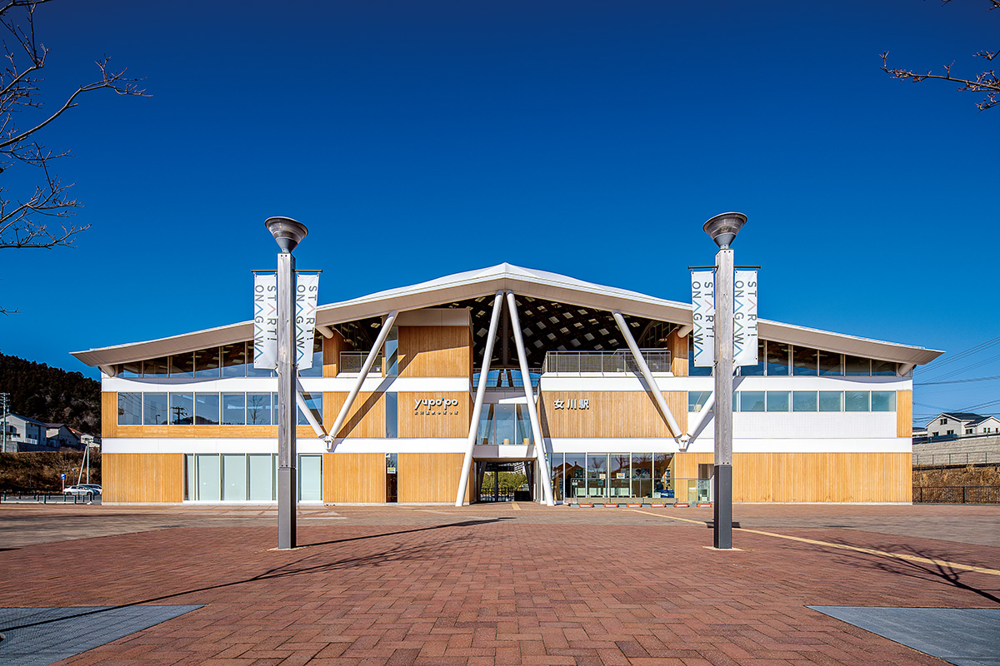
Онагава, рыбацкий городок на побережье Мияги, в 2011 году почти целиком ушёл под волну. Первым зданием нового центра стала станция с общественным онсэном, которую придумал архитектор Сигэру Бан.
Город
После волны
Землетрясение и цунами 11 марта 2011 года сильнее всего ударили по побережью Восточной Японии, и район Исиномаки в префектуре Мияги, куда входит и городок Онагава, стал известен на всю страну. Волна унесла людей и разрушила большую часть зданий. В следующие десять лет здесь шла долгая работа: большинство временных домов для пострадавших разобрали, заново проложили дороги и мосты, восстановили жильё и рыбные промыслы.
В этой работе с самого начала участвовали архитекторы, и известные на весь мир, и местные. Каждый этап восстановления оставлял после себя новые здания, поэтому к 2021 году, к десятой годовщине катастрофы, побережье Исиномаки и Онагавы стало местом, куда едут смотреть современную архитектуру. Смотреть её лучше вместе с историей о том, как город поднимался заново.
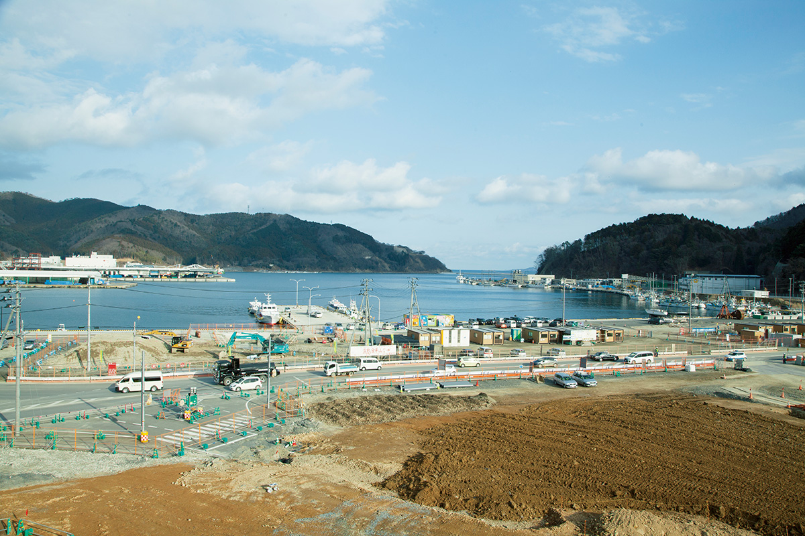
Архитектор
Сигэру Бан и картонные трубы
Среди тех, кто взялся за дело раньше других, был Сигэру Бан. Он проектирует музеи и жилые дома, а кроме того придумывает убежища для пострадавших от стихий и строит их в зонах бедствий по всему миру.
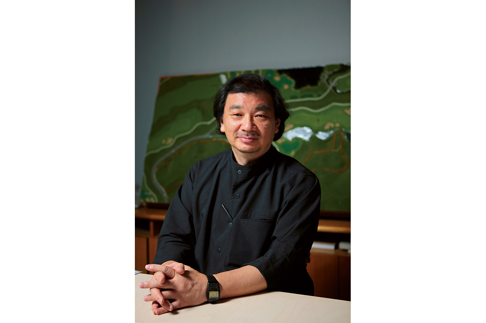
В 1995 году Бан основал волонтёрскую сеть архитекторов VAN. С апреля 2011 года её участники ездили по спортзалам, где жили люди, потерявшие дома, и собирали там перегородки из картонных труб, чтобы у каждой семьи появился свой угол до переезда во временное жильё.
«Во время волонтёрской работы я познакомился с тогдашним мэром Онагавы и предложил ему временные дома в два и три этажа, о которых думал уже давно»
Сигэру Бан
Обычно временное жильё после бедствий строят наспех и в один этаж. В Онагаве ровной земли мало, и одноэтажных домов на всех не хватило бы. Бан предложил неожиданный выход: жить в морских контейнерах.
«Если поставить грузовые контейнеры друг на друга в шахматном порядке и закрепить, получается дом, который хорошо держит землетрясения, тепло и звук»
Сигэру Бан
Такой посёлок поставили на бейсбольном поле городского стадиона. Жить там оказалось удобно, и жильцам даже завидовали.
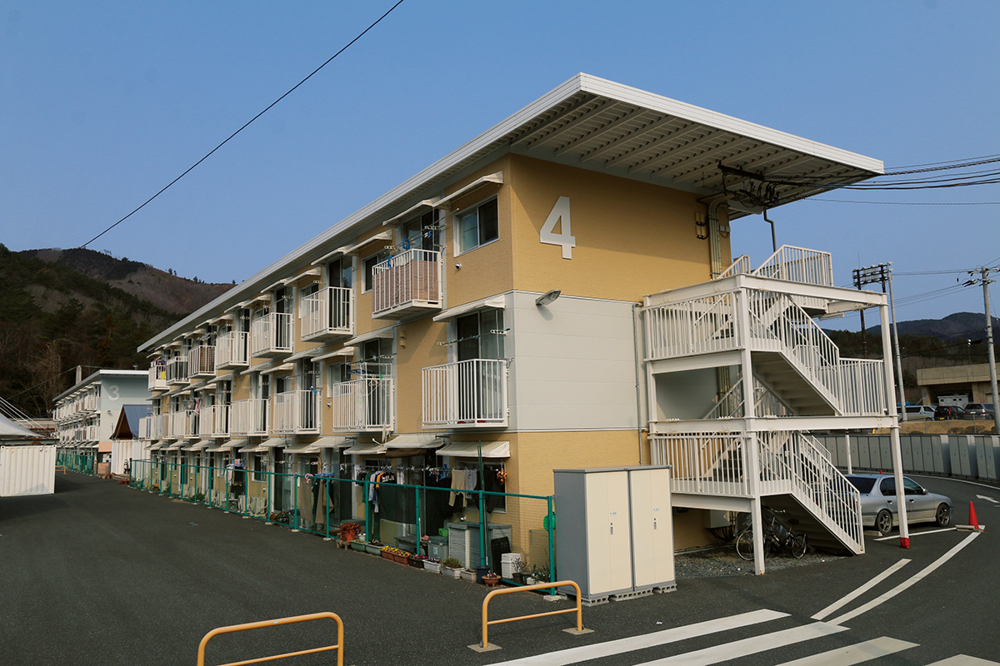
После этой работы Бану и поручили новое здание станции с городским онсэном. Землю для нового центра насыпали со стороны гор, поэтому станция встала примерно на 150 метров дальше от моря, чем старая. Она появилась раньше окружающих зданий, и её крыша повторяет чайку, которая расправила крылья над портом. По словам архитектора, в этом образе его надежда на то, что город взлетит. Здание стало символом Онагавы и опорой для тех, кто здесь живёт.
Станция
Конечная, где можно искупаться
Онсэн «Юпоппо» открылся в 2015 году одним из первых в восстановленном городе. Горожане любили этот дневной онсэн и до цунами, и после него он вернулся под одной крышей со станцией JR Онагава. Здание стоит сразу за платформой конечной станции линии Исиномаки и служит входом на пешеходную улицу, которая ведёт к заливу.
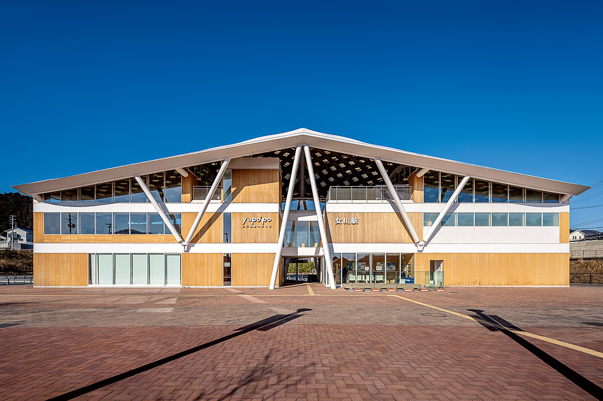
Каркас здания стальной, но снаружи стены обшиты кедром, и от этого здание выглядит тёплым и приветливым. Над всем зданием лежит большая крыша из LVL, клеёного бруса, сплетённого будто в корзину. Её держат V-образные стальные опоры, и они главное, что запоминается снаружи.
За стойкой регистрации начинаются уголок местных продуктов и галерея. Здесь можно рассмотреть любимый материал Бана, картонные трубы: из них сделаны изогнутые скамьи и потолок. Скамьи повторяют изгиб спины, поэтому на них легко засидеться.
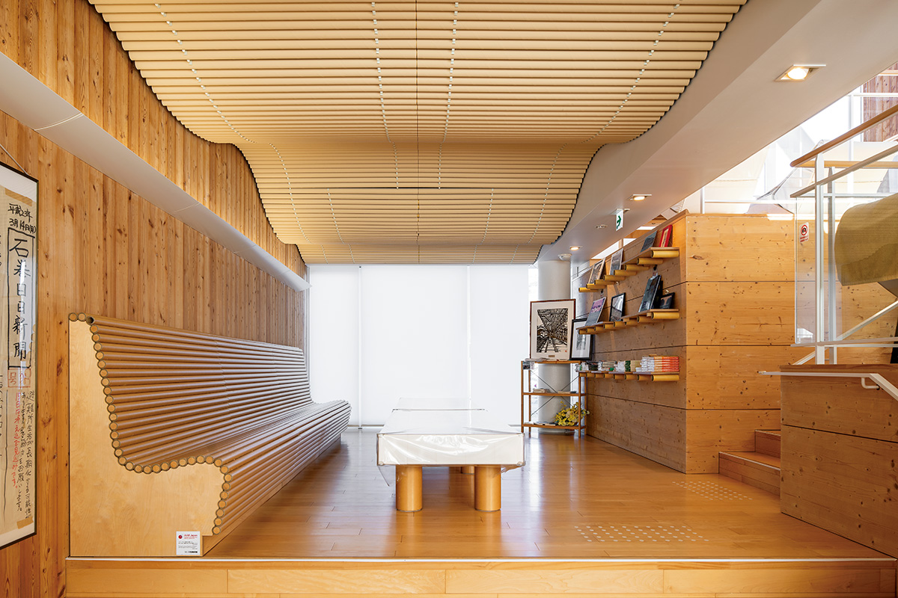
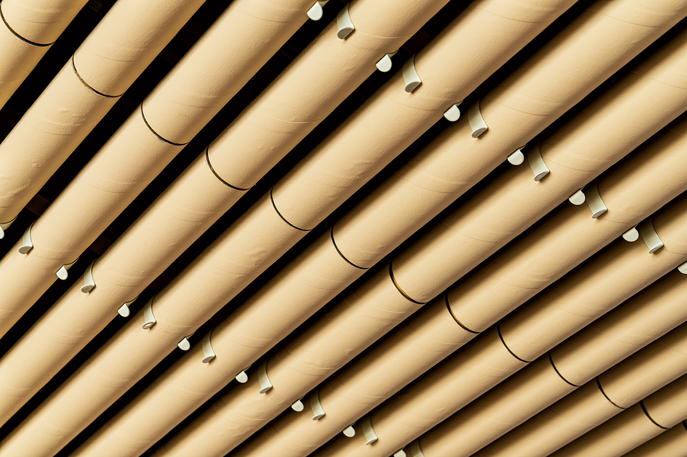
По лестнице можно подняться на второй этаж, в зону отдыха под высоким потолком. Крыша затянута полупрозрачной белой мембраной, и мягкий дневной свет заполняет весь зал. На стене напротив входа огромное плиточное панно с деревом, и под ним возникает чувство, что отдыхаешь вместе со всеми под одной большой кроной.
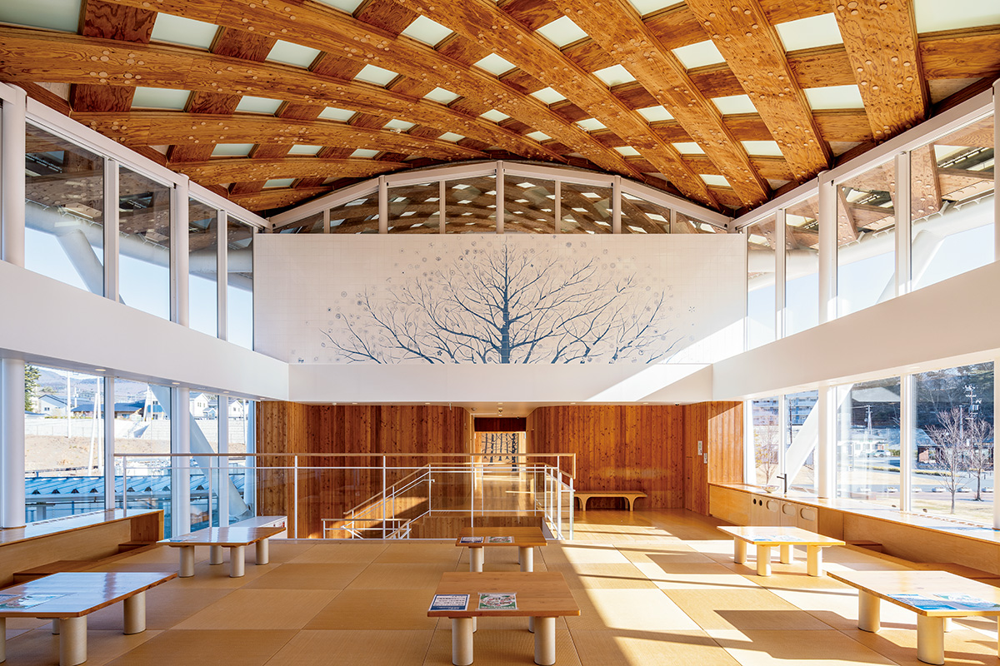
Купальня тоже стоит под большой крышей, в светлом зале с белой плиткой. Стены украшают панно по картинам Хироси Сэндзю: «Священная гора Фудзи» и «Источник и олени». Вода щелочная и мягкая для кожи, в ней хорошо отогреться не торопясь.
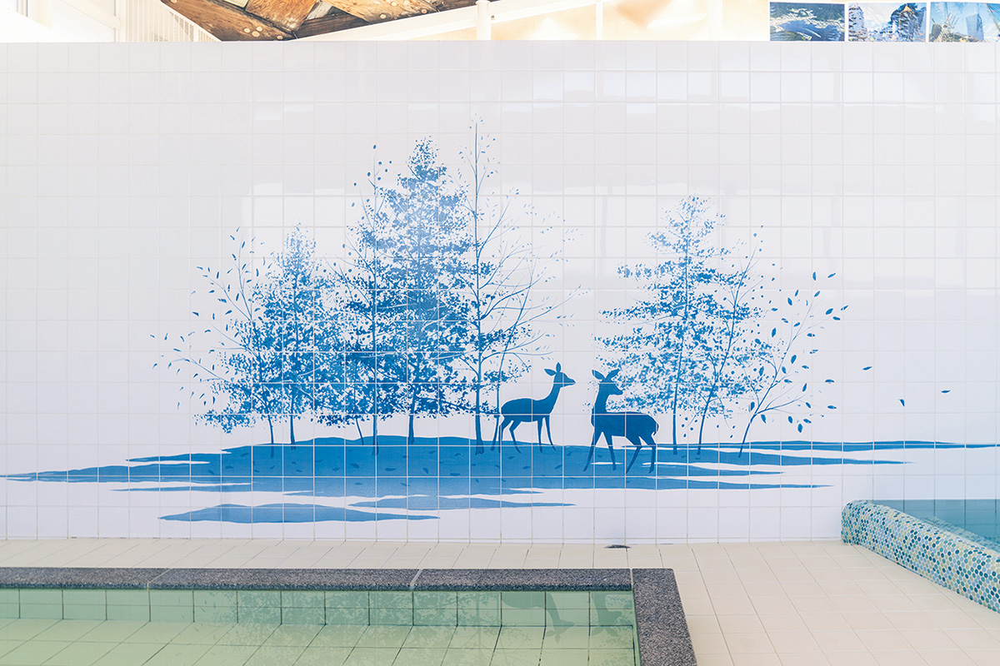
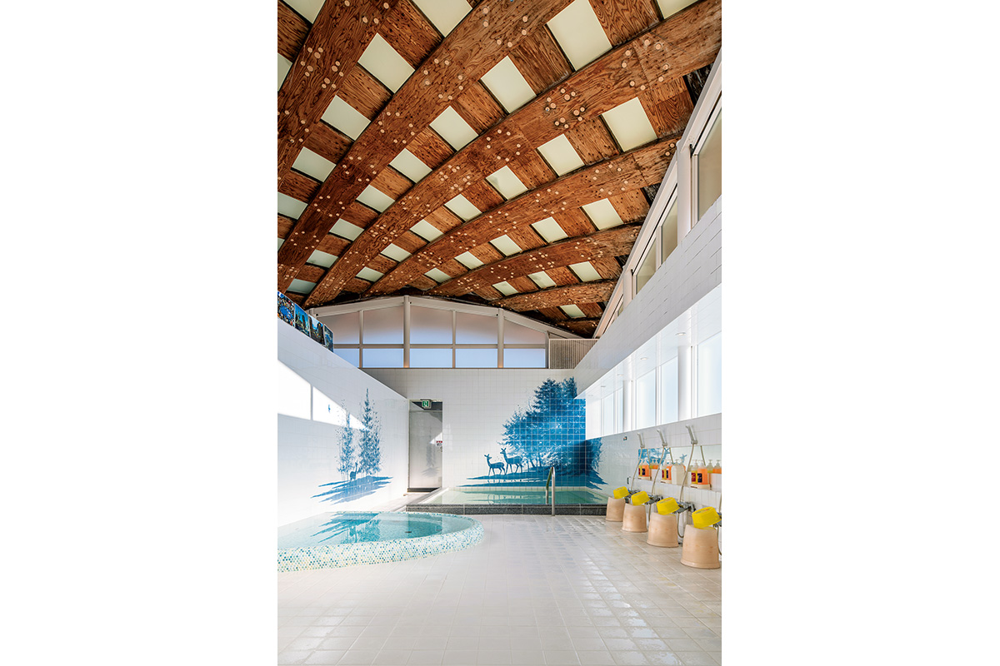
После купания стоит подняться на лифте на третий этаж, на смотровую площадку. Здесь чувствуется ветер, который идёт с моря на сушу. С площадки в середине здания на западе видна платформа станции, на востоке торговые ряды «Сипарупиа Онагава» и залив.
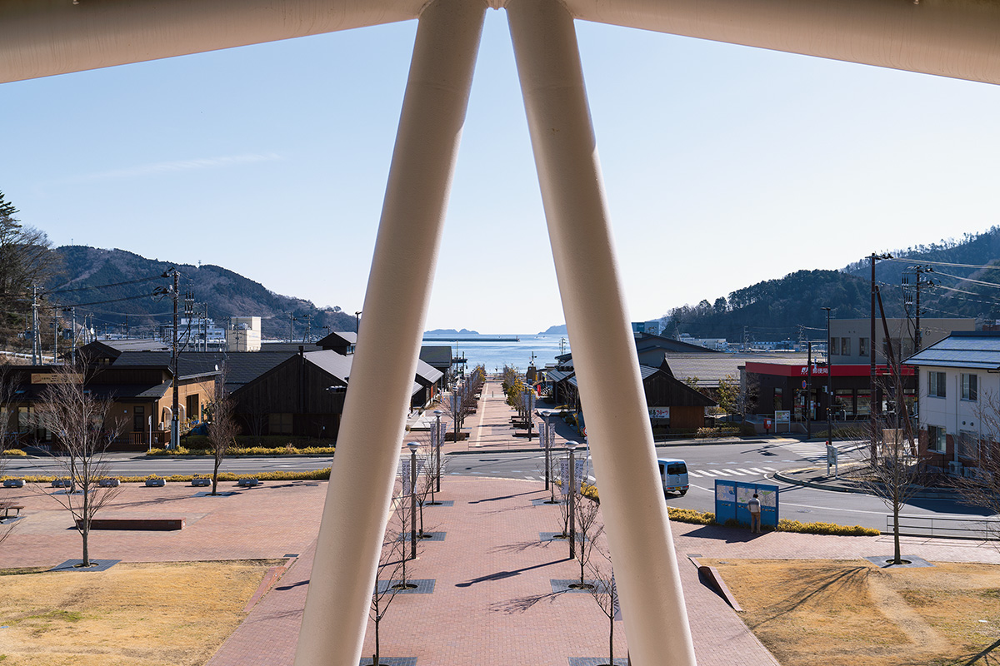
Отсюда хорошо видно весь город и море и можно представить, каким Онагава станет дальше. Для поезда это конечная станция, но для приезжих она становится точкой отправления.
Онсэн «Юпоппо» (станция JR Онагава)
- Адрес
- префектура Мияги, уезд Осика, Онагава, Онагава, 2-3-2
- Телефон
- +81 225-50-2683
- Часы работы
- 9:00–21:00 (вход до 20:30)
- Выходные
- третья среда месяца (если праздник, то на следующий день)
Улица
Город для пешеходов
Вместе со станцией строили «Кирпичную улицу», прямую пешеходную дорогу от вокзала к заливу. Это главная ось города, который живёт лицом к морю, и здания вдоль неё задуманы с ней как одно целое. Для плана восстановления город собрал совет из специалистов по градостроительству и проектированию, и общий замысел сложился в долгих обсуждениях с жителями.
Во всём районе пешеход важнее машины. Площадку для такси и автобусов, которую обычно ставят прямо перед вокзалом, нарочно отодвинули в сторону. Улица вымощена кирпичом, она широкая и спокойная, а дома вдоль неё разделены, и между ними наискосок идёт много переулков. Можно бродить между лавками, не оглядываясь на машины.
«Хочется, чтобы человек, сошедший с поезда, почувствовал атмосферу всего района, похожего на парк, и гулял здесь с удовольствием»
глава компании, которая развивает центр Онагавы
Весной 2021 года район должны были включить в сеть придорожных станций митиноэки.
«Сипарупиа Онагава»
Торговые ряды с арендаторами стоят по обе стороны «Кирпичной улицы». Шесть одноэтажных корпусов разделены на три зоны. Проект выполнило бюро архитектора Риэ Адзума.
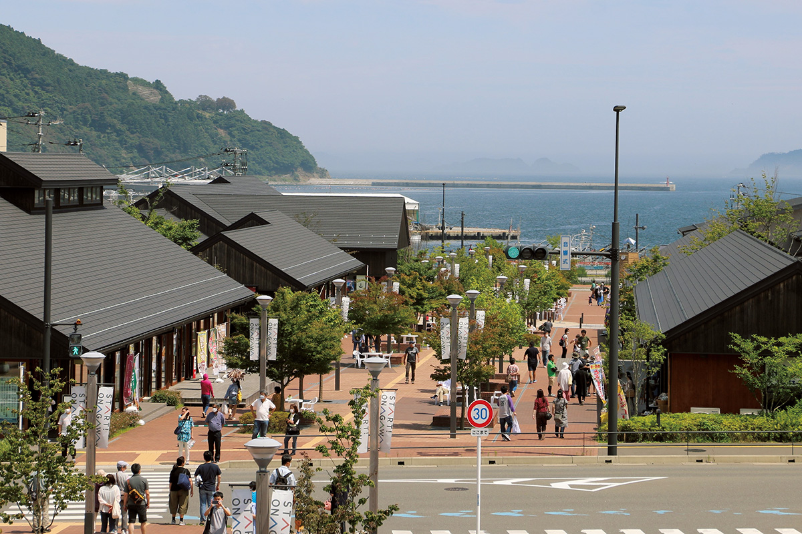
«Сипарупиа Онагава»
- Адрес
- префектура Мияги, уезд Осика, Онагава, Онагава, 2-60
- Сайт
- onagawa-mirai.jp
Рынок «Хаматэрасу»
В длинном здании с двускатной крышей собраны магазины и закусочные на одну тему: море. Есть смотровая терраса с видом на залив и площадь. Столики стоят и в застеклённом тамбуре, где в хорошую погоду открывают окна.
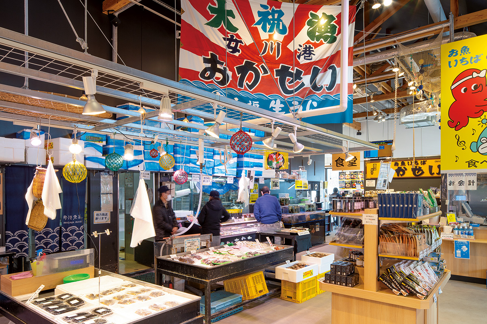
Рынок «Хаматэрасу»
- Адрес
- префектура Мияги, уезд Осика, Онагава, Онагава, 2-66
- Телефон
- +81 225-24-8118
- Часы работы
- у каждого магазина свои
- Выходные
- у каждого магазина свои
- Сайт
- onagawa-mirai.jp
Onagawa Future Center Camass
Здесь собираются жители и приезжие, чтобы вместе придумывать, как оживить город. Есть коворкинг, переговорные и зал для разных занятий, и в них решают вполне конкретные задачи. Разовое посещение в 2021 году стоило 500 иен для жителей Онагавы и 1000 иен для приезжих.
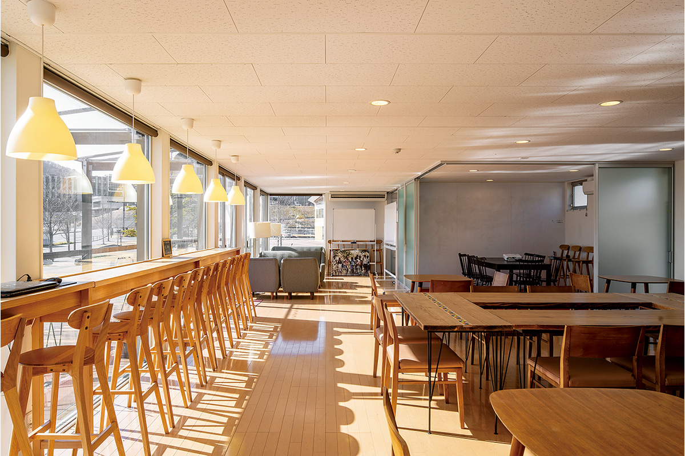
Onagawa Future Center Camass
- Адрес
- префектура Мияги, уезд Осика, Онагава, Онагава, 2-66
- Телефон
- +81 225-98-7175
- Часы работы
- 9:00–18:00
- Выходные
- у каждого магазина свои
- Цены / Вход
- однодневное членство 500 иен для жителей города, 1000 иен для остальных, вступительный взнос 500 иен отдельно
- Сайт
- onagawa-mirai.jp
«Матинака корюкан»
Городской центр задуман как уютная гостиная города, где встречаются люди. Здесь просторное фойе с потолком высотой 10 метров, зал, переговорные и музыкальная студия.
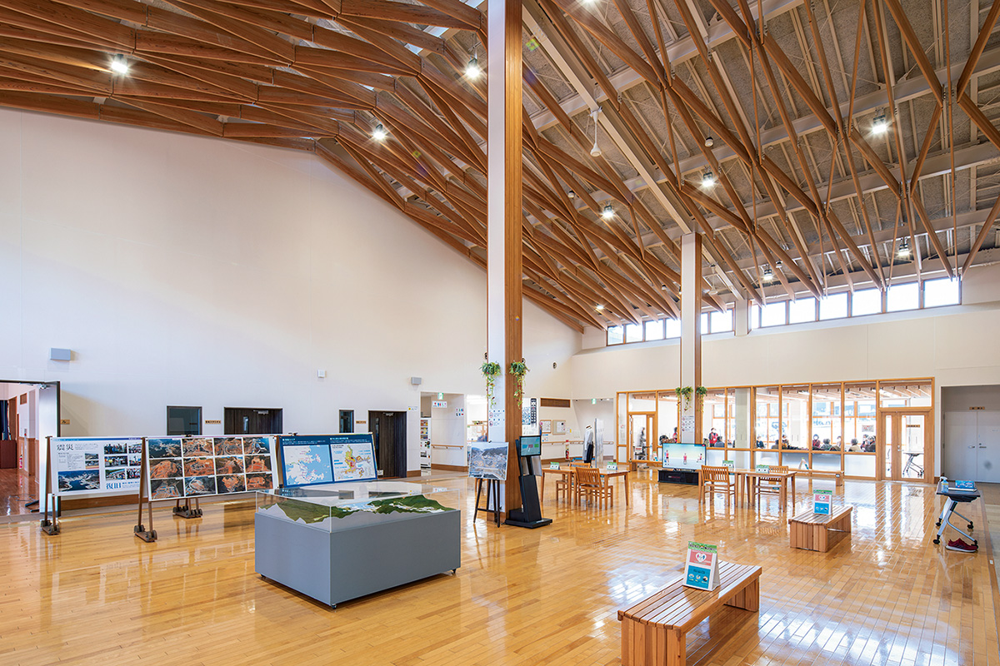
«Матинака корюкан»
- Адрес
- префектура Мияги, уезд Осика, Онагава, Онагава, 2-65-2
- Телефон
- +81 225-24-6677
- Часы работы
- 9:00–21:00
- Выходные
- второй и четвёртый вторник месяца (если праздник, то на следующий день)
«Агаин стэйсён»
Центр о рыбном промысле в здании, которому вернули облик старого вокзала Онагавы. В «Агаин пураза» продают продукты Онагавы и Мияги, а в «Агаин киттин» о рыболовстве рассказывают на практике: здесь можно самому разделать и приготовить морепродукты.
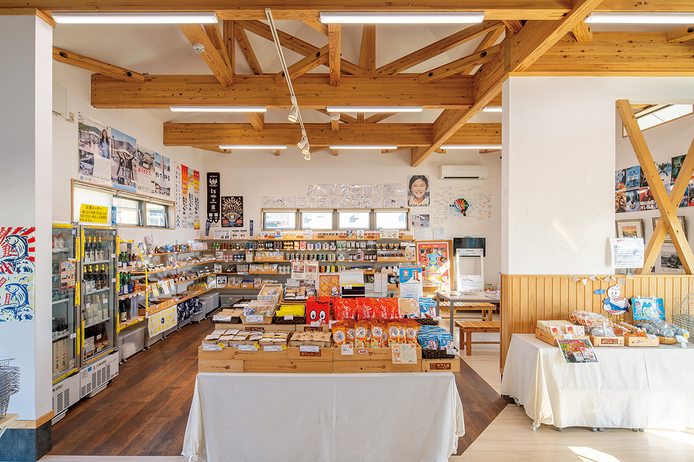
«Агаин стэйсён»
- Адрес
- префектура Мияги, уезд Осика, Онагава, Онагава, 2-16-4
- Телефон
- +81 225-98-7839
- Часы работы
- 10:00–17:00
- Выходные
- понедельник (если праздник, то на следующий день)
Маршрут
Как объехать Исиномаки и Онагаву
Новые здания в Мияги разбросаны по большой территории, и без плана на них уйдёт много времени. Лучше заранее выбрать, что хочется увидеть, и под это построить маршрут.
Из больших городов в Исиномаки и Онагаву почти всегда едут через Сендай. Поездом от станции Сендай по линии Сэнсэки до станции Исиномаки, там пересадка на линию Исиномаки до конечной, Онагавы. Поезда здесь пустили снова после катастрофы, и для любителей железных дорог сама поездка много значит. Но здания стоят далеко от станций, и чтобы не зависеть от расписания, удобнее машина. Прокатов много у станции Сендай. По скоростной дороге через Исиномаки до Онагавы чуть больше часа или полтора. Парковки есть у всех мест маршрута.
Начать можно с Maruhon Makiart Terrace, культурного центра Исиномаки, который открылся в 2021 году. Его спроектировал архитектор Сосукэ Фудзимото. Ряд белых зданий с треугольными крышами напоминает дома, которые когда-то стояли вдоль реки Кюкитаками, старого русла Китаками. В центре объединили пострадавшие от цунами дом культуры и городской зал: здесь большой зал, музей и кафе.
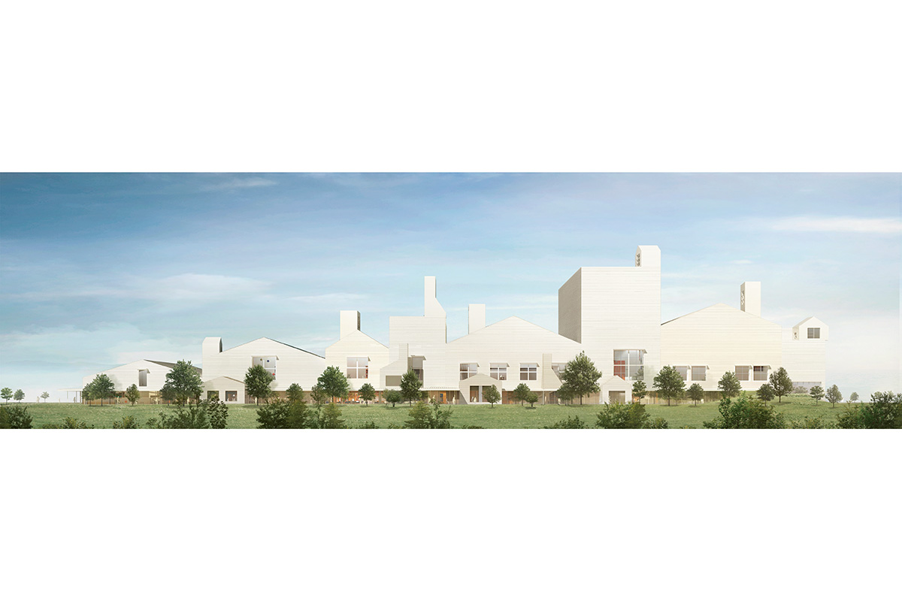
Из Исиномаки по национальной и префектурной дорогам можно доехать до Онагавы, погулять у станции и по торговым рядам и пообедать. Обратно вдоль побережья около 30 минут до центра Исиномаки. Если выехать из Токио рано утром, к обеду можно быть в Онагаве, а к вечеру вернуться в Исиномаки.
В Исиномаки есть кафе IRORI Ishinomaki, где можно и работать с ноутбуком, и гостиница Ishinomaki Homebase с кафе и номерами. Гостиница стоит рядом с мебельной мастерской Ishinomaki Laboratory, которая появилась после катастрофы, и служит ей шоурумом. Об этих местах рассказывает отдельная статья: Исиномаки после 2011 года.
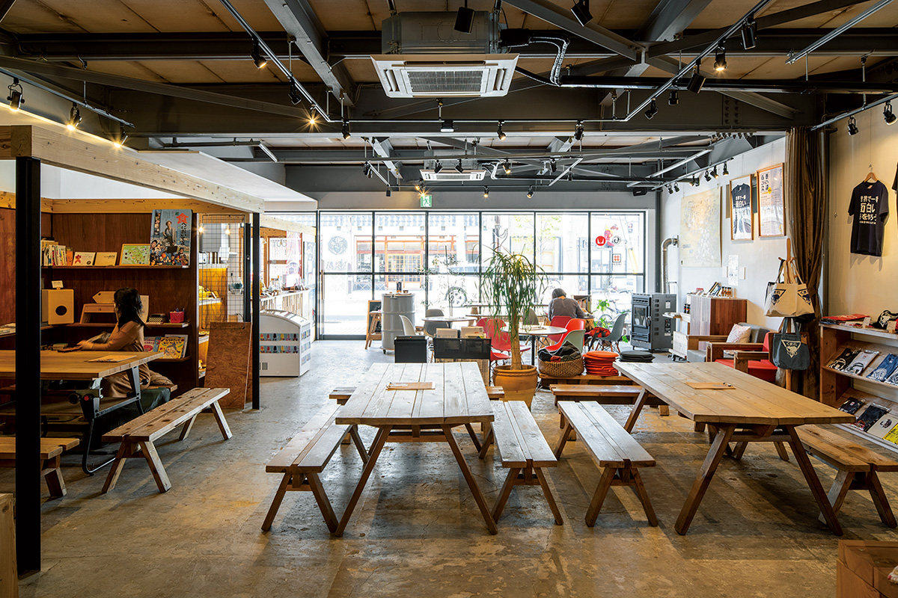
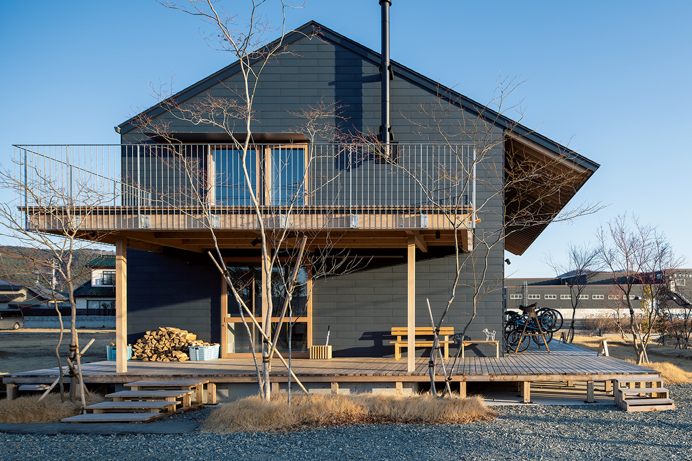
Это лишь один из вариантов. Если остаться на ночь, выбор шире: в Сендае, Мацусиме и соседних городах много исторических мест и зданий разных эпох, от старых до самых новых.
Фото: Тэруаки Цукуи, Sou Fujimoto Architects.